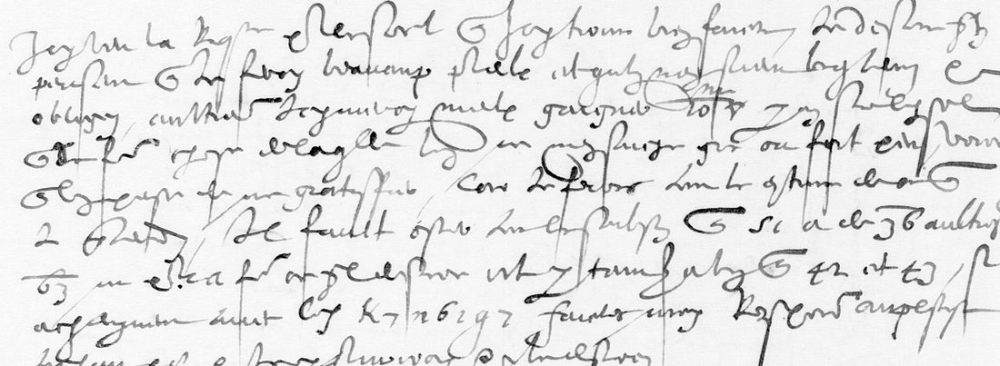

At a glanceExternal key matched · none (key obtained, text not read)
- The letter
- A copy of a letter from the duc de Nevers to Robert de La Vieuville, governor of Mézières, endorsed Nevers 1587 30 sept.: about 110 lines in a very hasty hand, mostly clear French with the cipher set into it. The catalogue said what it hides was not known.
- Where
- BnF Français 3975 ff. 101–102 (item 34), DECODE R4289. The BnF notice calls it a “letter with cipher and decipherment”, but the leaves carry no decipherment.
- The cipher
- Code numbers on f. 101v and f. 102v, plus three short runs of figures and letter-signs (33 symbols). The key is Tomokiyo’s Nevers key no. 16 (BnF fr. 3995 f. 32v), transcribed in full from the key sheet.
- What was read
- Key no. 16 gives the code numbers sense: a 42 et 43 de is “to the eschevins and the maire de ville”, 63 with a bar is La Vieuville, 48 is the château and 30 the artillery. It also deciphers a phrase of Nevers’s letter of 31 August 1587 to the same man.
- Why it resists
- The three cipher runs give no French under the key: every decryption it allows is nonsense. Only 30–40% of the letter text can be made out on the microfilm, and a noise control shows a solver needs about 80% glyph accuracy.
- Still open
- The runs are not deciphered; a colour scan or the original at the BnF is needed. The letter is not in Gomberville’s edition (1665), and no neighbouring leaf deciphers it.
01 The letter

Item 34 of fr. 3975 is ff. 101–102: three written pages and a third, with the endorsement Nevers 1587 30 sept. / Mr de La Vieuville on f. 102v. The BnF describes it as a copy. It is in the same hasty hand as the next item (f. 103, Nevers to the Queen Mother, 1 October 1587) and as Nevers’s letter of 31 August to La Vieuville in fr. 3416. Most of it is clear French: words like possible avant, la campagne, garnison, vous entretenir, faudra and adieu can be picked out. Robert de La Vieuville had been named governor of Mézières by the duc de Guise on 29 July 1587 (fr. 3975 item 27). Nevers was with Henri III’s army facing the German reiters. The code numbers fit that: the towns of Nevers’s Champagne government (Rethel, Reims), the town officers of Mézières, the château and the artillery.
02 The key: Nevers no. 16
Tomokiyo lists the Nevers ciphers in the key book BnF fr. 3995. Key no. 16 (1587, f. 32v) has a homophonic alphabet of digits and letter-forms (a 8 9, e 7 6, i 5 4, l 3 2, s i 5, t g f, u e d, r ſ k, qu n m …). It also has plain code numbers 10–100 for offices and places (42 eschevins, 43 maire de ville, 48 château, 50 Rethel, 51 Mézières, 64 Reims) and barred numbers 1–81 for provinces and persons (2 Rethelois, 25 Roy, 36 Nevers, 63 La Vieuville). Two things tie it to this letter. First, its code numbers make sense in the clear context. Second, it deciphers the one enciphered phrase Tomokiyo transcribed from the 31 August letter (fr. 3416 f. 53v), d r h f K 6 x 8 4 t = vostre main, which he had tried with key no. 11 without result. Keys 11 and 12 do not fit this letter.
03 What was decoded: the code numbers

About 31 code numbers are legible, all on f. 101v and f. 102v; f. 101r and f. 102r have only clear amounts such as 1200. Graded as in the site conventions:
| number | no. 16 | grade |
|---|---|---|
| 42 et 43 | eschevins et maire de ville | H |
| 63̅ (three times) | La Vieuville | H |
| 2̅ | Rethelois | C |
| 48 | château (“Chau”) | C |
| 30 | artillerie | C |
| 50, 64, 15 | Rethel, Reims, garnison | M |
| 33 et 35 et 34 | barred: Conty, Montpensier, Soissons (three princes of the blood); plain: menées, menaces, surprise | M |
| 40 | huguenotz | M |
| 28, 29, 36, 80 | no bar visible: levée / Reine de Navarre, deniers / Roi de Navarre, paix / Nevers, Guise / ? | I |
The full list, with the clear words round each number, is targets/vieuville1587/items.tsv.
04 What was tried on the rest
- The three runs. A (5 i 7 f Z r d 6 5 i 8 t h 6 ♁ 7 2 5̅, after eschevins et), B (5 i 7 ♁ 6 2 9 v, between de pouvoir and vous entretenir) and C (k 7 n 6 2 9 7, before faudra). I enumerated every reading no. 16 allows, with the unclear glyphs expanded (9 as a or as the tailed t; the Z-sign as m, r, l or g; h, which the key does not use, as any letter). Each was scored with the period French model, alone and inside its clear context. None is French. The best are si et rou essance de si, sie de lan and requelae; C gives requeste only if two of its digits are misread. The digits that decide them (2 or s, 9 or t, 6 or b) cannot be told apart on the microfilm.
- The letter text. A glyph-by-glyph transcription of 19 lines of f. 101r (about 900 glyphs) was about 60% sure per glyph. Scored as French it fails. Run through a homophonic substitution solver, in case it was letter cipher, it fails too. A control with real French enciphered and degraded shows the solver recovers text at 20% glyph error but not at 40%, and the transcription scores like the 40% case. The obstacle is legibility.
- A printed text. Gomberville’s Mémoires de M. le duc de Nevers (1665), both parts, searched for Vieuville, Vieville, Vieuuille and Aignan: not there. The other Vieuville letters in the BnF notices (fr. 4715, fr. 4716) are of 1589. DECODE holds no transcription.
- The neighbouring leaves. f. 103 (to the Queen Mother, 1 October) and f. 127 (to La Vieuville, 23 October 1587) are Nevers letters of the same weeks. Neither deciphers this one.
05 What remains
- The letter text, ff. 101r–102v, about 110 lines: not transcribed. Much of it is illegible on the microfilm, the only images there are.
- Runs A, B and C, 33 symbols: not deciphered. Key no. 16 applies, but the digit forms cannot be identified with certainty.
- Code numbers 28, 29, 33–35, 36 and 80: plain or barred cannot be decided.
- What would finish it: a colour scan of fr. 3975 ff. 101–102, or a reading of the original at the BnF. With a sure transcription, key no. 16 should decipher the runs directly.
06 Sources
- BnF Français 3975, Gallica views 185–188 (ff. 101r–102v); BnF notice cc504266, item 34.
- DECODE R4289.
- Key no. 16: BnF Français 3995 f. 32v, Gallica view 69; numbered in Satoshi Tomokiyo’s survey of the Nevers ciphers (cryptiana.web.fc2.com).
- The 31 August 1587 letter: BnF Français 3416 f. 53v, Gallica
btv1b9058240c. - Gomberville, Les Mémoires de M. le duc de Nevers, Paris 1665: Gallica bpt6k6435941k; part 2 on Google Books.
Notes, key transcription, item list and scripts: targets/vieuville1587/ in the repository.